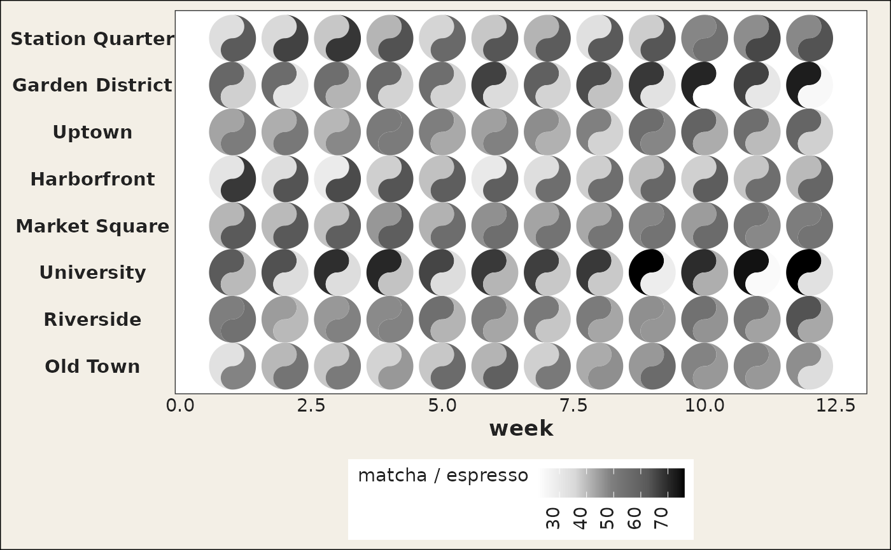

A small, deliberately synthetic two-source dataset for demos and
vignettes: weekly orders (per 100 customers) of espresso and matcha drinks
across eight fictional neighbourhoods over a 12-week season. It provides an
evergreen alternative to the COVID-era pitts_tg / states_tg
data, and because both columns share the same units it is the natural demo
for shared_limits / shared_legend in geom_taichi().
The values are simulated with a fixed seed (espresso cools off over the
season while matcha picks up, at neighbourhood-specific rates, plus noise);
the generating script ships in data-raw/cafes_tg.R in the source
repository.
Format
A data frame with 96 rows and 4 columns:
- week
Week of the season, 1 to 12.
- neighbourhood
One of eight fictional neighbourhoods (factor).
- espresso
Weekly espresso orders per 100 customers.
- matcha
Weekly matcha orders per 100 customers.
Examples
library(ggplot2)
ggplot(cafes_tg, aes(x = week, y = neighbourhood)) +
geom_taichi(yin = matcha, yang = espresso, shared_legend = TRUE) +
theme_taichi()
